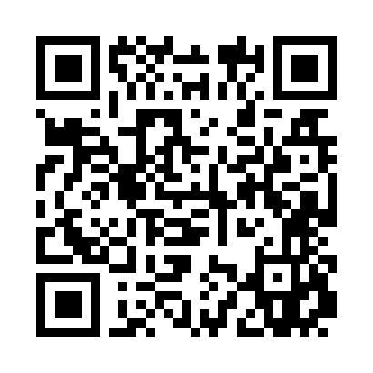

The Oath of the Laich Flame
by Ciarbhí Eoghan Mac Thomáis, Ancaire na Muin
I, Ciarbhí Eoghan Mac Thomáis, Ancaire na Muin,
declare this work to be a torch lit by the stars and rooted in the stone.
I bind no one but beckon all.
This is the First Light, the Laich, and I send it forth.
By the Hook, I gather the forgotten.
By the Sword, I divide what lives from what lies.
By the Shield, I guard the way.
So let it be bound. So let it be witnessed. So let it be walked.

Scan to Swear the Oath
Scan to Begin with Solasán